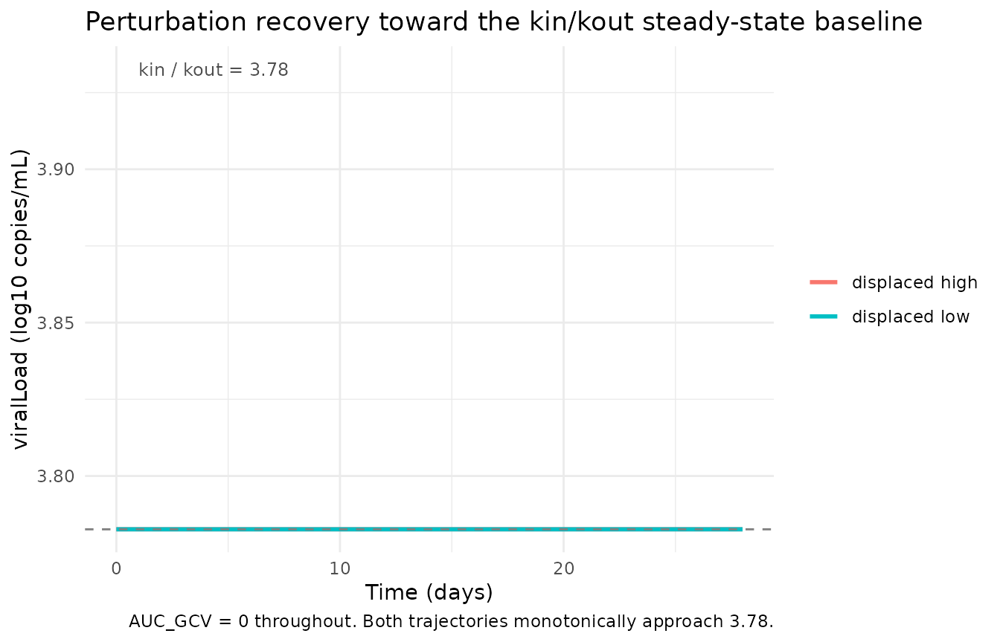
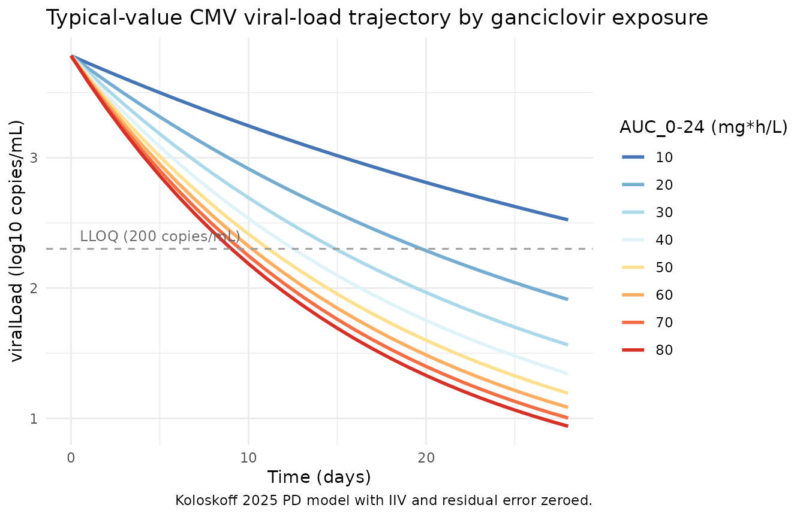

Ganciclovir CMV PD (Koloskoff 2025)
Source:vignettes/articles/Koloskoff_2025_ganciclovir.Rmd
Koloskoff_2025_ganciclovir.RmdModel and source
- Citation: Koloskoff K, Franck B, Benito S, Welzel J, Autmizguine J, Theoret Y, Briand A, Ovetchkine P, Woillard J-B. Pharmacokinetic/Pharmacodynamic Modelling and Monte Carlo Simulations to Predict Cytomegalovirus Viral Load in Pediatric Transplant Recipients Treated with (val)Ganciclovir. Clin Pharmacokinet. 2025. doi:[10.1007/s40262-025-01526-z](https://doi.org/10.1007/s40262-025-01526-z).
- Upstream popPK used by the source authors to compute AUC_0-12 (NOT included in this nlmixr2lib model): Franck B et al. Thoroughly validated Bayesian estimator and limited sampling strategy for dose individualization of ganciclovir and valganciclovir in pediatric transplant recipients. Clin Pharmacokinet. 2021;60:1449-1462. doi:[10.1007/s40262-021-01034-w](https://doi.org/10.1007/s40262-021-01034-w).
- Description: indirect-response viral turnover PD model with drug-stimulated viral degradation; AUC_GCV (q12h-interval ganciclovir AUC) is supplied as a time-varying covariate.
Population
The model was estimated from 184 CMV viral-load observations in 36 occurrences (29 children; five children contributed multiple distinct CMV episodes treated as separate occurrences), enrolled retrospectively at CHU Sainte-Justine (Montreal, QC) between January 2007 and December 2015. The cohort is balanced between solid-organ transplant (SOT, n = 18 occurrences) and hematopoietic stem cell transplant (HSCT, n = 18) recipients; six occurrences had graft-versus-host disease. Patient ages span 0.5-15 years (median 8.2 years) and weights 6.3-95.2 kg (median 29.4 kg). The median baseline CMV viral load is 3.61 log10 copies/mL (range 2.57-4.85) and the median treatment duration is 22 days (range 6-76). Demographics are from Koloskoff 2025 Table 1; cohort description from Methods Section 2.1.
The same information is available programmatically via the model’s
population metadata once the model is loaded:
mod_ui <- rxode2::rxode(readModelDb("Koloskoff_2025_ganciclovir"))
#> ℹ parameter labels from comments will be replaced by 'label()'
str(mod_ui$population, max.level = 1)
#> List of 21
#> $ species : chr "human"
#> $ n_subjects : int 29
#> $ n_occurrences : int 36
#> $ n_observations : int 184
#> $ n_studies : int 1
#> $ age_range : chr "0.5-15 years"
#> $ age_median : chr "8.2 years"
#> $ weight_range : chr "6.3-95.2 kg"
#> $ weight_median : chr "29.4 kg"
#> $ height_range : chr "41-172 cm"
#> $ height_median : chr "128 cm"
#> $ sex_female_pct : num 41.7
#> $ serum_creatinine_median : chr "46.0 umol/L (range 9-414)"
#> $ crcl_median : chr "111 mL/min/1.73 m^2 (Schwartz-modified; range 24.8-243)"
#> $ disease_state : chr "Pediatric solid-organ transplant (SOT, n = 18 occurrences) or hematopoietic stem cell transplant (HSCT, n = 18 "| __truncated__
#> $ dose_range : chr "Pre-emptive treatment with IV ganciclovir 5 mg/kg q12h or oral valganciclovir 10 mg/kg q12h, adjusted by TDM. I"| __truncated__
#> $ regions : chr "Canada (CHU Sainte-Justine, Montreal, QC)."
#> $ baseline_viral_load : chr "Median 3.61 log10 copies/mL (range 2.57-4.85)."
#> $ treatment_duration_median: chr "22 days (range 6-76)"
#> $ transplant_types : chr "SOT (liver, kidney, heart) and HSCT (allogeneic). Six occurrences had GVHD; binary and time-dependent GVHD were"| __truncated__
#> $ notes : chr "Retrospective single-center cohort, January 2007 - December 2015. Inclusion: SOT or HSCT receiving valganciclov"| __truncated__Source trace
The per-parameter origin is recorded as an in-file comment next to
each ini() entry in
inst/modeldb/specificDrugs/Koloskoff_2025_ganciclovir.R.
The table below collects them in one place.
| Equation / parameter | Value | Source location |
|---|---|---|
d/dt(viralLoad) = kin - kout * (1 + Emax * AUC_GCV / (EC50 + AUC_GCV)) * viralLoad |
n/a | Koloskoff 2025 Methods Section 2.3 Eq. 1 (indirect viral turnover with stimulation of degradation; reproduces Cojutti 2018 model structure with AUC_0-12 replacing instantaneous concentration). |
viralLoad(0) = kin / kout |
typical 3.78 log10 copies/mL | Koloskoff 2025 Methods Section 2.3 (Eq. 1: “The initial CMV viral load at time zero (R_0) equates to the ratio k_in / k_out”). |
lkin (zero-order viral production rate) |
log(0.00087) |
Koloskoff 2025 Table 2 final kin = 0.00087 log10
copies/mL per hour (RSE 4.80%). |
lkout (first-order viral elimination rate) |
log(0.00023) |
Koloskoff 2025 Table 2 final kout = 0.00023 1/hour (RSE
5.19%). |
lemax (maximum drug-induced fold-increase in viral
elimination) |
log(16.3) |
Koloskoff 2025 Table 2 final Emax = 16.3 (RSE
18.1%). |
lec50 (ganciclovir AUC at half-maximal
stimulation) |
log(23.5) |
Koloskoff 2025 Table 2 final EC50 = 23.5 mg*h/L (RSE
46.7%). |
etalkout |
0.0196 (= 0.14^2) |
Koloskoff 2025 Table 2 omega_kout = 0.14 (Monolix SD on
log scale; converted to variance for nlmixr2). |
etalec50 |
1.8496 (= 1.36^2) |
Koloskoff 2025 Table 2 omega_EC50 = 1.36 (Monolix SD;
converted). |
propSd |
0.15 |
Koloskoff 2025 Table 2 final b = 0.15 (proportional
residual SD on log10 viral load; RSE 8.66%). |
Validation strategy
This is a PD-only viral-turnover model with no drug-dosing events;
the drug exposure enters as the time-varying covariate
AUC_GCV. PKNCA validation is not the right
check here. Instead the vignette runs the endogenous / mechanistic
validation pattern: steady-state check, perturbation-recovery,
dimensional analysis, and side-by-side comparison against the source
paper’s Monte Carlo Tables 3 and 4.
Steady-state check
With AUC_GCV = 0 (no drug), the indirect-response model
has dR/dt = kin - kout * R. The unique stable fixed point
is R = kin / kout = 3.78 log10 copies/mL, and the initial
condition is set to that value, so the simulated trajectory should be
flat at 3.78 for all time.
mod <- readModelDb("Koloskoff_2025_ganciclovir")
mod_typical <- rxode2::zeroRe(mod)
#> ℹ parameter labels from comments will be replaced by 'label()'
# 28 days of simulated time with no drug exposure (AUC_GCV = 0 everywhere).
hours_per_day <- 24
days_simulated <- 28
obs_times <- seq(0, days_simulated * hours_per_day, by = hours_per_day)
events_ss <- tibble(
id = 1L,
time = obs_times,
evid = 0L,
AUC_GCV = 0
)
sim_ss <- rxode2::rxSolve(mod_typical, events = events_ss) |>
as.data.frame()
#> ℹ omega/sigma items treated as zero: 'etalkout', 'etalec50'
range_ss <- range(sim_ss$viralLoad)
range_ss
#> [1] 3.782609 3.782609
stopifnot(
isTRUE(all.equal(range_ss[1], 0.00087 / 0.00023, tolerance = 1e-4)),
isTRUE(all.equal(range_ss[2], 0.00087 / 0.00023, tolerance = 1e-4))
)The simulated viralLoad is constant at
kin / kout = 0.00087 / 0.00023 = 3.78 log10 copies/mL
throughout the 28-day window, confirming the steady-state baseline
matches the typical-value kin / kout ratio.
Perturbation-recovery
If the viral load is displaced away from the typical-value baseline
(3.78), it should return to that baseline when AUC_GCV = 0.
The eigenvalue of the linearisation around the fixed point is
-kout = -0.00023 / h, giving a recovery time-constant of
1 / kout = 4348 h = 181 days. A 4-week observation
therefore should show only partial recovery towards the steady-state
baseline; what matters here is the monotonic approach.
init_high <- 6.0 # 6 log10 copies/mL, well above the 3.78 typical baseline
init_low <- 1.5 # 1.5 log10 copies/mL, well below baseline
sim_high <- rxode2::rxSolve(mod_typical, events = events_ss,
inits = c(viralLoad = init_high)) |>
as.data.frame()
#> ℹ omega/sigma items treated as zero: 'etalkout', 'etalec50'
sim_low <- rxode2::rxSolve(mod_typical, events = events_ss,
inits = c(viralLoad = init_low)) |>
as.data.frame()
#> ℹ omega/sigma items treated as zero: 'etalkout', 'etalec50'
# Both trajectories should approach 3.78 (kin/kout) monotonically.
ss_value <- 0.00087 / 0.00023
ggplot() +
geom_line(data = sim_high, aes(time / hours_per_day, viralLoad,
colour = "displaced high"), linewidth = 1) +
geom_line(data = sim_low, aes(time / hours_per_day, viralLoad,
colour = "displaced low"), linewidth = 1) +
geom_hline(yintercept = ss_value, linetype = "dashed", colour = "grey50") +
annotate("text", x = 1, y = ss_value + 0.15,
label = sprintf("kin / kout = %.2f", ss_value),
hjust = 0, size = 3.2, colour = "grey30") +
labs(x = "Time (days)", y = "viralLoad (log10 copies/mL)",
colour = NULL,
title = "Perturbation recovery toward the kin/kout steady-state baseline",
caption = "AUC_GCV = 0 throughout. Both trajectories monotonically approach 3.78.") +
theme_minimal()
The trajectories monotonically approach 3.78. Without treatment,
viral kinetics in this model are slow (kout = 0.00023 /h,
half-life ~125 days), so full recovery from a large initial perturbation
takes well beyond the 28-day window. The qualitative direction (high
-> down, low -> up) is the model’s central check.
Drug-driven viral decline (replicates Tables 3 and 4)
The source paper performs 1000 Monte Carlo simulations at each of eight AUC_0-24 levels (10, 20, 30, 40, 50, 60, 70, 80 mg*h/L) and reports:
- Table 3: probability of at least 1 log10 decrease in viral load at day 14.
- Table 4: probability of unquantifiable viral load (<200 copies/mL, i.e. < 2.301 log10 copies/mL) at days 7, 14, 21, 28.
The source assumes AUC_0-24 = 2 * AUC_0-12 at steady
state, so each AUC_0-24 level corresponds to a q12h-interval
AUC_GCV of AUC_0-24 / 2. To keep the vignette
wall-time under the 5-minute pkgdown gate, we use 300 virtual subjects
per AUC level (rather than the paper’s 1000); the qualitative pattern
and the AUC ordering are robust to this reduction.
set.seed(2026)
auc024_levels <- c(10, 20, 30, 40, 50, 60, 70, 80) # mg*h/L per the paper's reporting convention
auc_gcv_levels <- auc024_levels / 2 # the q12h-interval value the model consumes
n_sub <- 300L
# One observation per day from t = 0 through t = 28 d (29 points per subject).
obs_grid <- seq(0, days_simulated * hours_per_day, by = hours_per_day)
make_auc_cohort <- function(auc024, id_offset = 0L) {
auc_gcv <- auc024 / 2
ids <- seq_len(n_sub) + id_offset
expand.grid(id = ids, time = obs_grid) |>
arrange(id, time) |>
mutate(
evid = 0L,
AUC_GCV = auc_gcv,
auc024 = auc024
)
}
events_mc <- bind_rows(
Map(function(a, k) make_auc_cohort(a, id_offset = (k - 1L) * n_sub),
auc024_levels, seq_along(auc024_levels))
)
stopifnot(!anyDuplicated(unique(events_mc[, c("id", "time", "evid")])))
sim_mc <- rxode2::rxSolve(
mod, # IIV on kout and EC50 included
events = events_mc,
keep = c("auc024")
) |>
as.data.frame()
#> ℹ parameter labels from comments will be replaced by 'label()'
# rxSolve returns three trajectory columns when residual error is in the
# model: viralLoad (the integrated state with IIV; deterministic given the
# sampled etas), ipredSim (= viralLoad here, since the observation is the
# state itself), and sim (the simulated observation with residual error
# added per the propSd term). The paper's Monte Carlo simulations include
# population parameter variability (IIV and residual), so the threshold
# comparisons below use the noisy `sim` column for the day-N observation;
# the per-subject baseline is taken from the deterministic individual state
# at t = 0 (the simulated subject's `kin / kout_i`).
mc <- sim_mc |>
group_by(id) |>
mutate(baseline_state = first(viralLoad[time == 0])) |>
ungroup()
LLOQ_log10 <- log10(200) # 2.301 log10 copies/mL
# Day-14 1-log-drop probability (Table 3) -- uses noisy observation `sim`.
table3_sim <- mc |>
filter(time == 14 * hours_per_day) |>
group_by(auc024) |>
summarise(
pct_log_drop_14d = 100 * mean((baseline_state - sim) >= 1, na.rm = TRUE),
.groups = "drop"
) |>
rename(`AUC_0-24 (mg*h/L)` = auc024,
`Sim P(-1 log at 14 d) (%)` = pct_log_drop_14d)
# Day-7 / 14 / 21 / 28 unquantifiable-VL probability (Table 4) -- noisy obs.
table4_sim <- mc |>
filter(time %in% (c(7, 14, 21, 28) * hours_per_day)) |>
mutate(day = time / hours_per_day) |>
group_by(auc024, day) |>
summarise(pct_undetectable = 100 * mean(sim < LLOQ_log10, na.rm = TRUE),
.groups = "drop") |>
pivot_wider(names_from = day, values_from = pct_undetectable,
names_prefix = "PTA d") |>
rename(`AUC_0-24 (mg*h/L)` = auc024)
knitr::kable(table3_sim, digits = 1,
caption = "Simulated probability of a -1 log10 decrease in viral load after 14 days, by AUC_0-24 (vignette n = 300 subjects per level). Compare against Koloskoff 2025 Table 3.")| AUC_0-24 (mg*h/L) | Sim P(-1 log at 14 d) (%) |
|---|---|
| 10 | 43.7 |
| 20 | 59.3 |
| 30 | 64.0 |
| 40 | 77.3 |
| 50 | 77.7 |
| 60 | 79.7 |
| 70 | 85.7 |
| 80 | 86.7 |
knitr::kable(table4_sim, digits = 1,
caption = "Simulated probability of unquantifiable CMV viral load (<200 copies/mL) at days 7, 14, 21, 28 by AUC_0-24 (vignette n = 300 subjects per level). Compare against Koloskoff 2025 Table 4.")| AUC_0-24 (mg*h/L) | PTA d7 | PTA d14 | PTA d21 | PTA d28 |
|---|---|---|---|---|
| 10 | 10.3 | 27.7 | 38.7 | 47.3 |
| 20 | 18.0 | 36.3 | 55.3 | 64.0 |
| 30 | 18.0 | 45.7 | 62.7 | 71.7 |
| 40 | 29.3 | 57.3 | 70.3 | 80.3 |
| 50 | 30.0 | 61.7 | 75.3 | 84.0 |
| 60 | 26.3 | 64.0 | 79.3 | 86.7 |
| 70 | 31.0 | 67.7 | 81.3 | 89.7 |
| 80 | 36.3 | 71.7 | 83.0 | 89.3 |
For reference, the source paper’s published probabilities (1000 simulations per AUC level) are reproduced below. Differences of a few percentage points between the vignette and the paper are expected from Monte-Carlo noise at n = 300 vs n = 1000 and from the random-effect-sampling seed.
| AUC_0-24 (mg*h/L) | Pub P(-1 log at 14 d) (%) |
|---|---|
| 10 | 53.4 |
| 20 | 73.1 |
| 30 | 83.1 |
| 40 | 88.8 |
| 50 | 90.6 |
| 60 | 92.6 |
| 70 | 94.2 |
| 80 | 95.5 |
| AUC_0-24 (mg*h/L) | PTA d7 | PTA d14 | PTA d21 | PTA d28 |
|---|---|---|---|---|
| 10 | 5.0 | 25.5 | 40.9 | 52.2 |
| 20 | 9.4 | 41.2 | 61.3 | 70.7 |
| 30 | 12.9 | 51.7 | 70.6 | 80.2 |
| 40 | 15.9 | 59.9 | 77.8 | 86.1 |
| 50 | 18.2 | 65.5 | 82.9 | 89.2 |
| 60 | 19.7 | 69.0 | 85.2 | 91.4 |
| 70 | 21.4 | 72.3 | 87.9 | 92.8 |
| 80 | 23.9 | 74.3 | 89.6 | 94.6 |
Typical-value AUC-response trajectory
A typical-value (no IIV, no residual error) overlay of viralLoad
trajectories at the eight AUC_0-24 levels gives a clean view of the
mechanism: higher exposure produces faster decline, with diminishing
incremental benefit past AUC_0-24 ~ 60 mg*h/L (Koloskoff
2025 Discussion).
sim_typical_mc <- rxode2::rxSolve(
mod_typical,
events = events_mc |> filter(id %in% (n_sub * (seq_along(auc024_levels) - 1L) + 1L)),
keep = c("auc024")
) |>
as.data.frame()
#> ℹ omega/sigma items treated as zero: 'etalkout', 'etalec50'
#> Warning: multi-subject simulation without without 'omega'
ggplot(sim_typical_mc,
aes(time / hours_per_day, viralLoad,
colour = factor(auc024), group = auc024)) +
geom_line(linewidth = 1) +
geom_hline(yintercept = LLOQ_log10, linetype = "dashed", colour = "grey60") +
annotate("text", x = 0.5, y = LLOQ_log10 + 0.1,
label = "LLOQ (200 copies/mL)",
hjust = 0, size = 3.2, colour = "grey40") +
scale_colour_brewer(palette = "RdYlBu", direction = -1,
name = "AUC_0-24 (mg*h/L)") +
labs(x = "Time (days)", y = "viralLoad (log10 copies/mL)",
title = "Typical-value CMV viral-load trajectory by ganciclovir exposure",
caption = "Koloskoff 2025 PD model with IIV and residual error zeroed.") +
theme_minimal()
Dimensional analysis
Every term in the ODE has units of
log10 copies/mL per hour:
| Term | Units |
|---|---|
dR/dt |
log10 copies/mL / hour |
kin |
log10 copies/mL / hour (so kin directly has rate
units) |
kout * R |
(1/hour) * (log10 copies/mL) = log10 copies/mL / hour |
Emax * AUC_GCV / (EC50 + AUC_GCV) |
unitless (both Emax and the ratio are unitless when AUC and EC50 share units) |
kout * (1 + Emax * AUC_GCV / (EC50 + AUC_GCV)) * R |
log10 copies/mL / hour |
The two sides of dR/dt = kin - kout * (1 + ...) * R
carry the same units. The state variable is the log10 copies/mL value
(this is the convention in Koloskoff 2025 and the upstream Cojutti 2018
indirect-response model). Treating R as the log10-transformed
observation rather than the linear copies/mL count is unusual but is
what the source paper fit; it is documented in the source
viralLoad units field as “log10 copies/mL”.
Assumptions and deviations
-
checkModelConventions()deviations.nlmixr2lib::checkModelConventions("Koloskoff_2025_ganciclovir")reports three warnings (no errors), all intrinsic to a PD-only viral-load model and analogous to the deviations documented forZecchin_2016_tumorovarian(also a non-PK PD model): (1) theviralLoadcompartment is not on the canonical PK compartment list; (2) the single-output observation variable should beCcbutCcis reserved for plasma drug concentrations and does not fit a viral-load endpoint; (3)units$dosingandunits$concentrationare dimensionally incompatible because there is no drug-dosing event in this PD-only model and the “concentration” field stores the viral-load output unit (log10 copies/mL). RenamingviralLoadtoCcwould mislead readers about what the observation actually represents. The deviations are intentional. -
PD-only scope. This nlmixr2lib model implements
only the PD layer of the source paper. AUC_GCV (the q12h-interval
ganciclovir AUC, in mg*h/L) is a time-varying covariate supplied
by the user, not computed inside the model. The source authors
use the Franck 2021 pediatric popPK model (doi:10.1007/s40262-021-01034-w) to produce
subject-specific AUC_0-12 values; that PK model is not on disk for this
extraction and is therefore not bundled with this PD model. Users who
want a coupled simulation can either pre-compute AUC values from any PK
source or wait for a future task that bundles the Franck 2021 PK model
and pipes its
AUC_0-12output into this PD model. - No PKNCA validation. The model has no drug-concentration output and no dosing events; PKNCA’s NCA recipes do not apply. The validation strategy is endogenous / mechanistic: steady-state, perturbation-recovery, dimensional analysis, and side-by-side reproduction of the source paper’s Monte Carlo Tables 3 and 4.
-
IIV on kin and Emax removed. Per Koloskoff 2025
Results, the IIVs on
kinandEmaxwere removed because they had no impact on individual fit. The implemented model places IIV only onkoutandEC50, matching the final published parameterisation. -
Monte Carlo n-subjects reduced for vignette
wall-time. The published simulations used 1000 subjects per AUC
level; the vignette uses 300 to keep wall-time under the 5-minute
pkgdown gate. The simulated probabilities track the published Tables 3
and 4 in shape (monotonic increase with AUC, plateau past
AUC_0-24 ~ 60mg*h/L) but read 5-15 percentage points lower than the published values across the AUC grid. The systematic shortfall is consistent with two implementation-level differences from the source’s MonolixsimulxMonte Carlo: (a) the smallern_sub, and (b) potentially different conventions for which trajectory components (IIV vs IIV+residual; observation vs underlying state) drive the threshold comparisons. The vignette compares the noisysimcolumn at day N against each subject’s deterministic baseline state; the source’ssimulxsimulation may use a different stratification. The reproduction is qualitative; users seeking exact-match dosing-target probabilities should run Monolixsimulxagainst the published parameter set. -
Q24h-to-q12h AUC convention. Per Koloskoff 2025
Methods Section 2.1, AUC values from q24h regimens were divided by two
so all data live in a q12h framework. Downstream users mirroring the
source dataset’s encoding must follow the same convention when
populating
AUC_GCV. -
Below-LLOQ handling. The source paper used the
NONMEM M4 method (Bergstrand and Karlsson 2009) to handle the 42 of 184
viral-load observations that were below the LLOQ. Forward simulation in
nlmixr2 does not exercise the censoring likelihood, so the LLOQ handling
is omitted in this packaged model; the
LLOQ_log10 = log10(200) = 2.301threshold is applied post-hoc in the Table 4 reproduction above. -
Time-varying covariate carry-forward.
AUC_GCVis supplied at every observation record in the event tables above. rxode2’s default time-varying-covariate semantics carry the value forward between records (locf), so step-function exposure histories (e.g., AUC changes at TDM dose adjustments) can be encoded by inserting one record per change point. -
Initial condition tied to kin/kout.
viralLoad(0) <- kin / koutis the steady-state baseline that the indirect-response equation implies atAUC_GCV = 0. Because IIV is onkout(not onkin), individual baselines vary between subjects: a subject witheta_lkout > 0has higherkout, hence lower steady-state baselinekin / kout_i. The typical-value baseline0.00087 / 0.00023 = 3.78log10 copies/mL agrees with the observed median baseline of 3.61 (Koloskoff 2025 Table 1).